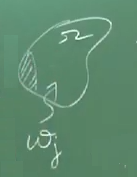

Sonlu Öğeler Metotu (Finite Elements Method -FEM-) - Mittal
Alternatif Anlatım
Fonksiyonların İç Çarpımı (Inner Product)
Vektörlerden bildiğimiz çoğu tekniği fonksiyonlara uygulamak mümkündür [3]. Elimizde $f(x), g(x), ...$ reel değerli, $\alpha \le x \le \beta$ aralığında tanımlı fonksiyonları olduğunu düşünelim, bu fonksiyonlar bir reel vektör uzayı oluştururlar. Şimdi $(f,g)$ iç çarpımını düşünelim, ki bu çarpım tanımı
$$ (f,g) = \int_{\alpha}^{\beta} f(x) g(x) \mathrm{d} x $$
olsun. Üstteki bizim tanımımız tabii, başkaları ekler yapabilirler, mesela bazıları iç çarpıma bir ağırlıklama fonksiyonu $w$ ekliyorlar, yani üstteki entegralde $f,g$ ve $w$ çarpılıyor. Bizim dersimizin amaçları için biz gördüğümüz tanımla yetineceğiz.
Üstteki entegral lineer. Simetrik olduğu bariz. Ayrıca kesin artı (positive definite) özelliği de var.
Eldeki iç çarpım tanımıyla artık "bir fonksiyonun uzunluğu" bile hesaplanabiliyor, aynen vektörlerin uzunluğunun hesaplanabildiği gibi.
$$ || f || = \sqrt{ (f,f) } = \sqrt{\int_{\alpha}^{\beta} f(x) f(x) \mathrm{d} x } = \sqrt{\int_{\alpha}^{\beta} [f(x)]^2 \mathrm{d} x } $$
Bu sayede birim fonksiyonlar bile yaratabilirim, mesela $f(x)$'i uzunluğu $||f(x)||$ ile bölersem onu normalize etmiş olurum, yani uzunluğu bire inmiş olur, $g$, $h$, vs ile bunu aynı şekilde gerçekleştirebilirim.
Tamlık (Completeness)
Bir $\alpha \le x \le \beta$ aralığında tanımlı fonksiyonlar kümesi $S$ olsun. Ayrıca $y_0,y_1,..$ aynı $S$ kümesinde tanımlı birimdik (orthonormal) fonksiyonlar olsun (yani her $y_i$ fonksiyonun birbiri ile iç çarpımı sıfır sonucu verecek). Bu birimdik fonksiyonlar kümesine tam denir eğer herhangi bir $f \in S$'i o baz fonksiyonların lineer kombinasyonu olarak yaklaşık şekilde temsil edebiliyorsam. Yaklaşıklık derecesi benim tanımladığım $\epsilon > 0$ ile ölçülecektir, ve kaç tane fonksiyonu kombine ettiğim de yine benim tarafımdan tanımlı olacaktır. Yaklaşıklık
$$ || f - (k_0 y_0 + k_1 y_1 + k_2 y_2 + ... + k_m y_m) || < \epsilon $$
ile ölçülebilir.
Not: Birimdiklik tamlık için şart değil, fakat birimdiklik bazı rahat işlemler yapabilmemizi sağlar, o bakımdan tercih edilir.
Örnek
$-\pi \le x \le \pi$ arasında tanımlı bir $f(x)$ olsun. O zaman Fourier fonksiyonları $1$, $\sin x$, $\cos x$, $\sin 2x$, $\cos 2x$, ... bir tam küme oluştururlar. Çünkü $-\pi \le x \le \pi$ arasında bana verilen herhangi bir fonksiyonu Fourier fonksiyonlarının bir kombinasyonu olarak temsil edebilirim, ya da doğru terminoloji kullanmak gerekirse, onu bir "Fourier Serisi" olarak temsil edebilirim. Görülen o her birimdik fonksiyonu $a_0$, $b_0$, $a_1$, $b_1$, .. sabitleriyle çarpıp toplarım ve yaklaşık temsili yaparım, tabii katsayıların ne olduğunu bulmam gerekir, doğru olanlarını bulunca $f$'yi iyi temsil etmiş olurum. Seriyi uzattıkça, daha fazla Fourier terimi ekledikçe, $f$'ye daha da yaklaşırım, benden beklenen $\epsilon$ yakınlığını böylece elde edebilirim. Mesela kabaca bir yaklaşıklık için 4-5 tane terim, çok iyi olması için yüzlerce.
Örnek
Herhangi bir küpsel polinomu temsil etmek bağlamında $1,x,x^2,x^3$ bir tam küme oluşturur. Fakat bu küme yegane küme mi? Hayır. Mesela $5$, $3+x$, $9 + 2x + 6x^2$, $5x + 20x^2$ kümesi de tamdır.
Tam küme öğelerinin bir özelliğine dikkat çekmek gerekir, onların birini diğerlerinin lineer kombinasyonu olarak temsil etmek mümkün değildir. Mesela $x^3$'u $1$, $x$, $x^2$'yi lineer olarak birleştirerek erisemem.
Örnek
Bu örnekte tam olmayan bir kümeye bakalım. Mesela küpsel polinomları temsil etmek için $1,x,x^3$ tam değildir, çünkü $x^2$ eksik. Mesela üstteki $9 + 2x + 6x^2$ fonksiyonu.. onu eldeki bu baz ile temsil edemem çünkü $x^2$ bazı yok. Evet $x^3$ var ama oradan "aşağı inerek" karesel temsil yapmak mümkün değil, en azından benden istenen $\epsilon$ yakınlığında, ve lineer kombinasyonlar kullanarak bunu yapmak mümkün değil.
Teori
$y_0,y_1,y_2,..$ fonksiyonları $S$ kümesi için, $\alpha \le x \le \beta$ aralığında tanımlı, tam, ve birimdik (bu sefer şart) bir küme olsun. O zaman $f \in S$ bir sürekli fonksiyon ise ve her $y_m$'e dikgen ise bu demektir ki $f$ muhakkak sıfırdır.
Mesela iki boyutta basit bir örnek üzerinde görelim; iki birimdik baz var, $x$ ve $y$ üzerinde kalın çizgi ile gösterdiğim, $i,j$ diyelim, şimdi bir $A$ vektörü düşünelim, bu vektör çizildiği haliyle tabii, birimdik $i,j$ kombinasyonu ile temsil edilebilir. Fakat şimdi düşünelim, eğer $A$ hem $i$'ye hem $j$'ye dikgen olsaydı, yani öyle bir vektör olsaydı ki ne $x$ ne $y$ üzerinde hiçbir yansıması olmasaydı, bu $A$ sıfırdan başka bir şey olamazdı, değil mi? Üstteki teorinin söylediği bundan ibaret.

Ağırlıklı Artıklar Metotu (Weighted Residual Method -WRM-)
Önceki derste iyi koşullu bir sistemi elde etmeyi gördük, bu kötü koşullu (ill conditioned) olmanın tersi tabii. Bu derste WRM'yi kurmayı göreceğiz [1], ki bu metot aslında kapsayıcı bir tarif, altında farklı hesap yöntemleri de olabiliyor, WRM'nin kendisi hata kontrolünü nasıl yapacağımızı tarif ediyor.
Basit bir problemle başlayalım. Laplace formülü mesela, iki boyutu baz alalım, ama birazdan göreceğimiz fikirler 1D ya da 3D için de geçerli. Problem bölgesi (domain) $\Omega$ olsun onun sınırları $\Gamma$,

İlgilendiğimiz alan (field) $T(x,y)$, bu reel değerli bir fonksiyon, ve kurduğumuz sistem için bu fonksiyonun şu şartlara tabi olmasını istiyoruz,
$$ \nabla^2 T = 0 \quad \Omega \textrm{ üzerinde } $$
$$ \Gamma \textrm{ için } T = T_0 $$
Bu tür problemlere Drichlet problemleri deniyor.
Üstteki şartları yerine getiren bir $T(x,y)$ çözümü bulmak istiyoruz. O zaman ilk akla gelen nedir? Diferansiyel denklemi alıyorum ve $\Omega$ içindeki tüm noktalar için çözmeye uğraşıyorum. Fakat bu kolay değil. Ayrıca $\Omega$'daki eşitlik $\Gamma$ sınırında geçerli değil, ikinci şart sebebiyle. Bu arada matematiksel olarak çözüm nedir? $\Omega$'daki sonsuz tane nokta için geçerli olan şeydir. Buna kesin çözüm (exact solution) deniyor.
Fakat bu çözümü bulmak mümkün değilse, ya da yaklaşık bir çözüm de yeterli oluyorsa o zaman yaklaşık yöntemler kullanabilirim.. $\nabla^2 T = 0 $ eşitliği $\Omega$'daki her nokta için, her $\Gamma$ sınır şartında değil belli seçilmiş noktalarda olsun diyebilirim.
Ama "belli noktalarda" deyince de iş bitmiyor, o seçilmiş noktalarda kesin çözüm mü yapsam, yoksa o noktalarda da yaklaşık çözüm yapsam? Ya da tüm noktalarda yaklaşık çözüm üzerinden bir hata hesaplayıp, tüm seçilmiş noktalarla hesaplanan ortalama bir hatanın sıfır olması için mi uğraşsam?
Şöyle bir yöntem deneyelim; elimizde / verili belli bir baz fonksiyon "sınıfı" olsun, bu fonksiyonlar Fourier bazı $\sin$, $\cos$ olabilir, ya da Chebisev polinomları olabilir. Bu "test", baz fonksiyonları $T_i(x,y)$ içinde, $i=1,2,...,N$, ve nihai $T$'yi
$$ T = T_0 + \sum_{i=1}^{N} c_i T_i(x,y) $$
ile hesaplayayım, $c_i$'ler başta bilmediğim katsayı değerleri olsun. Bilinen / verili test fonksiyonları üzerinden doğru $c_i$'leri bulursam bu beni gerçek fonksiyon $T$'ye yaklaştırır. Üstteki toplamda $T_0$ terimi özellikle o şekilde formüle dahil edildi, $T_i$ toplamının sınırda sıfır olmasını ayarlayabilirsem, $T=T_0$ şartını otomatik olarak tatmin etmiş olurum.
$N$ sayısına dikkat, gerçek fonksiyonu aşağı yukarı temsil etmek istesem $N$'yi az tutardım, birkaç tane temel fonksiyon birleşimi.. Ama $N$'i arttırarak, hatta sonsuza yaklaştığımızda gerçek fonksiyona tıpatıp eşit olacağımızı bekleyebilirdik, o zaman $N$ sayısı bir anlamda yaklaşıklamanın kalitesini kontrol edecektir. $N$ arttıkça hata azalır, yaklaşıklama gerçeğe yaklaşır. Bir ödünleşim (trade-off) durumu var muhakkak, çok büyük $N$ hesaplaması zor olan bir sistem ortaya çıkartabilir, vs.
Bu bizi hata tanımına getiriyor. Onu gerçek ve yaklaşık değerler arasındaki fark, "artık" (residual) üzerinden tanımlayacağız, artık $R$,
$$ R(c_i,x,y) = \nabla^2 T $$
Bu kadar basit. Niye artığı direk $\nabla^2 T$'e eşitlemek yeterli? Çünkü ana formüle bakarsak $\nabla^2 T$ ideal durumda sıfır olmalı değil mi? Ama yaklaşıklama mükemmel olmadığı için sıfırdan farklı (fakat umuyoruz ki ona yakın) değerler döndürecektir, o zaman bu değeri alıp direk hata / artık değeri olarak kullanabiliriz. O zaman
$$ R(c_i,x,y) = T_0 + \sum_{i=1}^{N} c_i T_i(x,y) $$
diyelim. Üstteki denklem bana her veri noktası, belli bir $x,y$ için olan hatayı verir. Sınır koşulunu denklem doğal olarak karşıladığı için orada zaten hata yok. Yani tanım itibariyle sınırda hata sıfır, ve sınırlar içinde muhtemel olarak sıfır olmayan bir değerde.
Şimdi $c_i$'lerin bulunmasına gelelim, yaklaşık temsil onlar üzerinden mümkün olacak. $N$ tane $c_i$ bilinmiyor o zaman bir şekilde $N$ tane denklem üretmem lazım, ki onları çözerek bilinmeyenleri elde edeyim. WRM burada devreye giriyor.
Ağırlıklı artıklar dedik, ağırlıklardan da (dikkat $c_i$ katsayılarından, ve test fonksiyonlarından farklı bu) da $N$ tane var, $N$ tane fonksiyon. Onları $j$ ile indisleyebiliriz, $w_j$, $j=1,...,N$. Artıkları şöyle ağırlıklıyoruz,
$$ \int_\Omega w_j R \mathrm{d} \Omega $$
Biraz önce söylediğimiz artığın sıfır olma hedefini biraz genişletip ağırlıklanmış artığın sıfır olması haline getiriyoruz. O zaman $N$ tane denklemi şöyle üretiriz,
$$ j=1,\quad \int_\Omega w_1 (x,y) \left[ \nabla^2 T_0 + \sum_{i=1}^{N} c_i \nabla^2 T_i(x,y) \right] \mathrm{d} \Omega $$
$$ j=2,\quad \int_\Omega w_2 (x,y) \left[ \nabla^2 T_0 + \sum_{i=1}^{N} c_i \nabla^2 T_i(x,y) \right] \mathrm{d} \Omega $$
$$ \vdots $$
$$ j=N,\quad \int_\Omega w_N (x,y) \left[ \nabla^2 T_0 + \sum_{i=1}^{N} c_i \nabla^2 T_i(x,y) \right] \mathrm{d} \Omega $$
Böylece $N$ tane bilinmeyen için $N$ tane formül elde ettim, ve bu şekilde çözümü yapabilirim.
$w_j$'ler ne yapıyor? Başta hataların ortalamasından bahsetmiştik hatırlarsak, her $w_j$ bir nevi ortalamadır, ama her $j$ için farklı bir ortalama şekli seçebiliriz, mesela alttaki resimde

karalanmış kısma daha fazla ağırlık ver diyebiliriz, vs. Genel anlamda hatırlarsak üç sayı A,B,C ortalaması demek aslında her sayının 1/3 "ağırlığı" ile çarpılıp, toplanması ve sonucun 3'e bölünmesi demektir. Bu ağırlıkları değiştirebiliriz, o zaman farklı bir ortalama elde ederiz, mesela 1/2, 1/4, 1/4 kullansam A'ya daha fazla ağırlık vermiş olurdum.
Bu açıdan bakınca üstte üretilen her denklem belli bir artık formülünün farklı şekillerde ağırlıklanması sonucu elde edilen denklemlerdir.
Galerkin Metotu
Bu metot FEM'in temelini oluşturur [2], 1915, 1913'te Galerkin, Bubnov tarafından ayrı ayrı keşfedilmiştir. Galerkin metotunun özü şu basit önermeden ibaret, daha önce gördüğümüz ağırlıklı artıklar metotunda Galerkin metotu der ki $w_j = T_j$, yani ağırlık fonksiyonu test fonksiyonu ile aynı olsun. Ayrica hatirlarsak $T_j$'lerin bir tam kume olusturmasi gerekiyor, o zaman $w_j$'lerin de tam kume olusturmasi gerekiyor. Bu durumda agirlikli artiklar metotu bizi su noktaya getirir,
$$ (w_j,R) = 0 $$
Yani $R$ her $w_j$'e dikgen, bu daha önceki dikgenlik teorisini hatırlatmalı bize, eğer $R$ her birimdik baz fonksiyonuna dik ise, kendisi sıfırdan başka bir şey olamaz. Bu çok kuvvetli bir sonuç. $R$ hatasının tam kümedeki her fonksiyon ile iç çarpımının sıfır olma şartına bakıyoruz.. bu tür bir ilişkinin bize ileride faydalı olacağını görmek zor değil, dikgenlikten direk $R$'nin sıfır olmasına atlayabilmiş oluyoruz, bunu lineer cebirsel işlemlerimizde kullanabiliriz.
Kaynaklar
[1] Mittal, FEM for Fluid Dynamics, Lecture 07 Part A, Method of Weighted Residuals, IIT Kanpur, https://www.youtube.com/channel/UCWheqBdP45xBVp_Eqi1eltQ/videos
[2] Mittal, FEM for Fluid Dynamics, Lecture 07 Part B, IIT Kanpur, https://www.youtube.com/channel/UCWheqBdP45xBVp_Eqi1eltQ/videos
[3] Mittal, FEM for Fluid Dynamics, Lecture 05 Part C, Inner Product for functions,Orthogonality,Completeness, IIT Kanpur, https://www.youtube.com/channel/UCWheqBdP45xBVp_Eqi1eltQ/videos
Yukarı